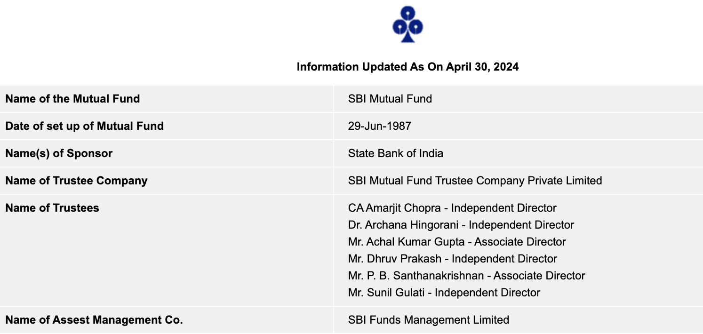
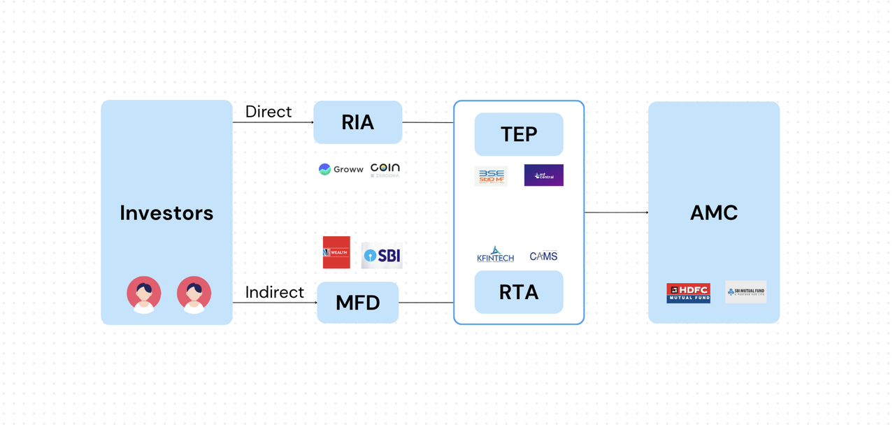

Mutual Funds - Behind the scenes
As investors, we buy mutual funds from fund houses, platforms, or from distributors. But have you ever wondered what happens behind the scenes? How do these funds operate, and what processes are involved in managing them? In this post, we'll explore the behind-the-scenes operations of mutual funds.
Structure of a Mutual Fund

In India, mutual funds have 3-tier structure consisting of the Sponsor, the Trust & the Asset Management Company (AMC).
-
The sponsor establishes the mutual fund and is responsible for its operations.
-
The trust & trustees are responsible for safeguarding investor interests, supervising the AMC's operations, and ensuring compliance with regulations. Custodians are appointed to hold the securities of the mutual fund and ensure their safekeeping.
-
AMC is the core entity responsible for the day-to-day management of the mutual fund.
The legal seperation of Trust & AMC ensures that the interests of investors are protected, and the fund's assets are managed independently.
All AMCs are registered with the Securities and Exchange Board of India (SEBI) and the list is available on the SEBI website.
We can look at SBI MF details from AMFI to understand the structure better.

Mutual Fund Transactions

RIA: Investors can use RIA (Registered Investment Advisor) platforms like Groww, Zerodha Coin, to invest in direct mutual funds.
MFD Alternatively, they can also buy regular mutual funds through distributors like NJWealth, PhonePhe etc.
TEP: To process these transactions, Trading & Execution Platforms like BSE Star MF, NSE MFSS, etc are available. These platforms facilitate the buying and selling of mutual fund units, ensuring that transactions are executed efficiently and accurately.
RTA: RTA(Registrar and Transfer Agent) plays a crucial role in maintaining investor records, processing transactions, and ensuring compliance with regulatory requirements.
Investors can also buy mutual funds directly from the fund house's website or through their mobile app.
These mutual funds can be stored in Demat account or in physical form as account statements. It depends on the platform or fund house you choose to invest with.
Conclusion
This post provided a brief overview of the behind-the-scenes operations of mutual funds in India.
Need further help with this? Feel free to send a message.

Anand Reddy Pandikunta (ChillarAnand)
Improving Health & Wealth with Technology